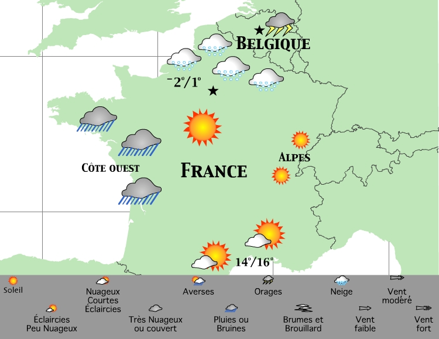
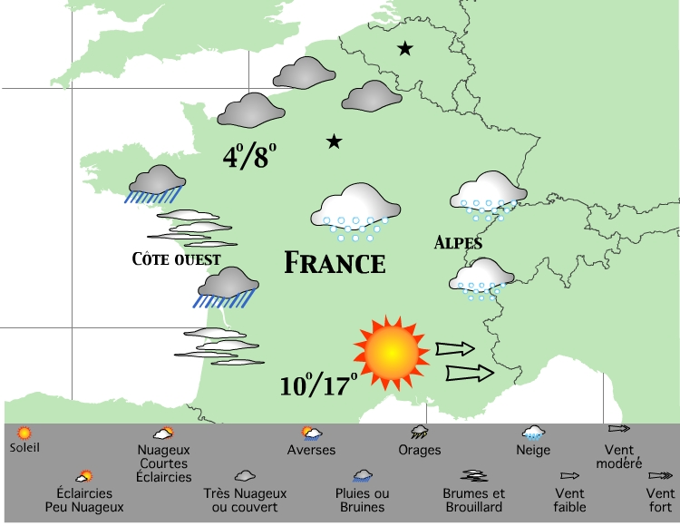

The verb courir is an irregular -ir verb. The final
consonant of its stem is r, but this r does not drop in
the singular, either in speech or in writing.
Je
cours
dans le parc.
Nous
courons
dans le parc.
Tu
cours
dans le parc.
Vous
courez
dans le parc.
Il/Elle/On
court
dans le parc.
Ils/Elles
courent
dans le parc.
The passé composé of courir is formed with avoir.
J’ai couru
ce matin.
Nous
avons couru
ce matin.
Tu
as couru
ce matin.
Vous
avez couru
ce matin.
Il/Elle/On
a couru
ce matin.
Ils/Elles
ont couru
ce matin.
3. Exercices oraux 1-2
Exercice oral 1: Il faut courir.
Use the present tense of courir, to run, to explain
why these people no longer have a weight problem.
Modèle
Jean-Luc était gros, mais maintenant il est mince.
C'est qu'il court une heure tous les jours.
Commençons.
Exercice oral 2: Si l'on court, on arrive.
Use the passé composé of courir, to run, to
explain why these people arrive early.
Modèle
Il est arrivé en avance.
C'est qu'il a couru.
Commençons.
4. Exercice écrit 1
Fill in the blanks with the correct present tense form of
courir, to run, so that the sentences say that
people will be on time if they run.
Question
Réponse
Tu vas arriver à l'heure?
Si je
_______
cours
, je vais arriver à l'heure.
Ils vont arriver à l'heure?
S'ils
_______
courent
, ils vont arriver à l'heure.
Je vais arriver à l'heure?
Si tu
_______
cours
, tu vas arriver à l'heure.
On va arriver à l'heure?
Si l'on
_______
court
, on va arriver à l'heure.
Nous allons arriver à l'heure?
Si vous
_______
courez
, vous allez arriver à l'heure.
Vous allez arriver à l'heure?
Si nous
_______
courons
, nous allons arriver à l'heure.
Philippe va arriver à l'heure?
S'il
_______
court
, il va arriver à l'heure.
La Structure De La Langue 2: Le Verbe “Mourir”
The verb mourir, to die, has a variable stem in the
present tense.
Je
meurs
de froid.
Nous
mourons
de froid.
Tu
meurs
de froid.
Vous
mourez
de froid.
Il/Elle/On
meurt
de froid.
Ils/Elles
meurent
de froid.
Note that like the verb to die in English, mourir is
often used figuratively or for dramatic effect:
Je meurs de froid means I’m dying of the cold.
In the passé composé, mourir is conjugated with
être.
Je
suis mort(e).
Nous
sommes mort(e)s
.
Tu
es mort(e).
Vous
êtes mort(e)(s).
Il
est mort
.
Ils
sont morts.
Elle
est morte
.
Elles
sont mortes
.
On
est mort(e)(s).
Note that il est mort can mean either he has died or
he is dead.
5. Exercice oral 3
Exercice oral 3: On n'est pas content.
What are these people complaining about? Use the verb
mourir, to die, and the noun provided to state what
is bothering them.
Modèle
mon frère aîné
froid
Mon frère aîné meurt de froid.
Commençons.
La Structure De La Langue 3: Les Saisons, Les Mois, Les Dates
Study the vocabulary for the seasons in French:
l’hiver
winter
le printemps
spring
l’été
summer
l’automne
autumn, fall
The preposition en is used with the names of the seasons,
except for in the spring.
en hiver
in the winter
au printemps
in the spring
en été
in the summer
en automne
in the autumn, in the fall
The preposition en is also used with the months of the year.
en janvier
in January
en février
in February
en mars
in March
en avril
in April
en mai
in May
en juin
in June
en juillet
in July
en août
in August
en septembre
in September
en octobre
in October
en novembre
in November
en décembre
in December
Note that the final t of août is often pronounced.
To express a date in French, you use the definite article le +
cardinal numbers (deux, trois, quatre.. .) and
not the ordinals as in English. The exception is the first of the
month: le premier.
C’est quand, ton anniversaire?
When is your birthday?
Le dix février.
February 10th.
Note that there is no élision before the numbers
huit and onze.
le huit mai
le onze novembre
To express a year in French, you count in hundreds, as in English.
1914
dix-neuf cent quatorze
1945
dix-neuf cent quarante-cinq
1776
dix-sept cent soixante-seize
1324
treize cent vingt quatre
After 2000, the years are expressed in thousands + the number of
hundreds.
2000
deux mille
2100
deux mille cent
The year 1000 is often spelled mil instead of
mille: l’an mil.
In everyday speech, especially in reference to years of the 20th
century, the last two digits are used, as in English.
Je suis né(e) en quatre vingts.
I was born in ’80.
6. Exercices oraux 4-5
Exercice oral 4: Les jours de fête en France
Refer to the list of French holidays below as you provide the
dates of each holiday. For an explanation of these holidays, see
the Note culturelle in this Préparation. The speaker
will provide the name of the French holiday. Respond by stating
the date on which the holiday occurs.
Le Jour de l'An
January 1
Le Jour des Rois
January 6
La Fête du Travail
May 1
La Victoire des Alliés
May 8
La Fête Nationale
July 14
L'Assomption
August 15
La Toussaint
November 1
Noël
December 25
Modèle
Le Jour de l'An
January 1
Le Jour de l'An, c'est le premier janvier.
Commençons.
Exercice oral 5: Un peu d'histoire
Several key dates in French history are presented below. Read them
aloud. Notice that in the numerical representation of dates,
French always puts the day first, followed by the month. The
speaker will identify the event. Respond by stating the date of
the event in French.
Modèle
8.5.1945 Fin de la Deuxième Guerre Mondiale
Fin de la Deuxième Guerre Mondial
le huit mai, dix-neuf cent quarante-cinq
Commençons.
25.12.800
Charlemagne couronné à Rome par le pape Léon III
3.7.987
Sacre
(coronation)
de Hughes Capet, premier roi capétien
30.5.1431
Jeanne d'Arc brûlée
(burned)
à Rouen
13.4.1598
Édit de Nantes: tolérance du culte protestant
14.5.1643
Louis XIV (le Roi Soleil) devient roi de France à l'âge de
quatre ans.
14.7.1789
Prise de la Bastille, début de la Révolution Française
18.5.1804
Napoléon déclaré empereur
28.7.1914
Début de la Première Guerre Mondiale
11.11.1918
Fin de la Première Guerre Mondiale
1.9.1939
Début de la Deuxième Guerre Mondiale / Début de la Seconde
Guerre Mondiale
La Structure De La Langue 4: Les Expressions Du Temps
The verb faire is used in many weather expressions in French.
Quel temps fait-il?
What’s the weather like?
Il fait beau.
The weather’s nice.
Il fait mauvais.
The weather’s bad.
Il fait chaud.
It’s warm.
Il fait froid.
It’s cold.
Il fait soleil.
It’s sunny.
Il y a du vent.
It’s windy.
Il fait gris.
It’s cloudy.
Il fait un temps magnifique.
The weather’s terrific.
Il fait un sale temps.
The weather’s lousy.
Quel sale temps!
What lousy weather!
The verbs pleuvoir, to rain, and neiger,
to snow, appear only in the third-person singular.
Il pleut.
It’s raining.
Il neige.
It’s snowing.
These verbs can of course appear in the passé composé.
Il a plu.
It has rained.
Il a neigé.
It has snowed.
Here are some expressions and additional weather vocabulary that will
help you to understand weather reports in French.
de la grisaille sur le Nord de la France
gray skies over the North of France.
des pluies et des bruines passagères sur l’ouest
intermittent rain and drizzle over the west
des éclaircies dans le Midi
clearing in the south of France
Après une matinée pluvieuse, il va y avoir des éclaircies
l’après-midi.
After a rainy morning, there is going to be some clearing in the
afternoon.
un orage
storm
nuageux
cloudy
un nuage
cloud
le brouillard
fog
brumeux
foggy
un vent faible
a weak wind
un vent fort
a strong wind
un vent modéré
a moderate wind
les prévisions (météorologiques)
weather forecast
Les températures sont en baisse.
The temperature(s) is/are dropping.
Les températures sont en hausse.
The temperature(s) is/are rising.
Les températures sont stables.
The temperature(s) is/are stable.
Les températures sont douces.
The temperature(s) is/are mild.
7. Exercices oraux 6-7
Exercice oral 6: Le temps qu'il fait
Look at the weather maps provided and answer each of the seven
questions with a complete sentence.

Show written description
The temperature in northern France is -2° to 1° Celsius. It is
snowing in northern France, with thunderstorms in Belgium. It is
raining on France's west coast. It is sunny in the Alps. In
southern France it is partly sunny, with temperatures of 14° to
16° Celsius.
Commençons.
Exercice oral 7: La météo
Listen to the French weather report and look at the map of France.
You will then hear five statements about seasons and weather.
Write vrai, true, or faux, false, on a
piece of paper, then check your answers. If you made any mistakes,
listen a second time.

Show written description
The temperature in northern France is 4° to 8° Celsius. It is
cloudy there. It is raining and foggy on France's west coast. It
is snowing in the Alps and central France. In southern France it
is sunny and windy, with temperatures of 10° to 17° Celsius.
Commençons.
.
Vrai ou Faux?
Commençons.
Show Answers
faux
faux
vrai
vrai
faux
La Structure De La Langue 5: L’Imparfait
In forming the imperfect tense, l’imparfait, one adds the
following endings to the stem of the verb:
je: -ais
nous: -ions
tu: -ais
vous: -ions
il/elle/on: -ait
ils/elles: -aient
In the imperfect, the stem of the verb is the nous form of the
present tense. To find the stem, drop the nous ending,
ons.
Nous Form
Stem
nous arrivons
arriv-
nous finissons
finiss-
nous attendons
attend-
nous avons
av-
nous allons
all-
nous prenons
pren-
nous recevons
recev-
nous connaissons
connaiss-
nous faisons
fais-
Here is the phrase déjeuner tous les jours avec les copains,
to have lunch every day with one’s friends, expressed in the
imperfect tense.
Je déjeunais tous les jours avec les copains.
Nous déjeunions tous les jours avec les copains.
Tu déjeunais tous les jours avec les copains.
Vous déjeuniez tous les jours avec les copains.
Il/Elle/On déjeunait tous les jours avec les copains.
Ils/Elles déjeunaient tous les jours avec les copains.
Note that in the imperfect, -er verbs whose stems end in
c or g change c to ç and g to
ge before endings of the imperfect that begin with
a (ais, ait, aient). In other words, there
are changes to the endings of the singular and the third-person
plural. Study the forms of commencer, to begin, in the
sentence Je commençais toujours à huit heures,
I always began at eight o’clock.
Je commençais toujours à huit heures.
Nous commencions toujours à huit heures.
Tu commençais toujours à huit heures.
Vous commenciez toujours à huit heures.
Il/Elle/On commençait toujours à huit heures.
Ils/Elles commençaient toujours à huit heures.
Study the forms of manger, to eat, in the imperfect in
the sentence Je mangeais du pain à tous les repas,
I used to eat bread at every meal.
Je mangeais du pain à tous les repas.
Nous mangions du pain à tous les repas.
Tu mangeais du pain à tous les repas.
Vous mangiez du pain à tous les repas.
Il/Elle/On mangeait du pain à tous les repas.
Ils/Elles mangeaient du pain à tous les repas.
The only irregular verb in the imperfect is être, to be.
The endings are added to the stem ét.
J’étais sur le point de sortir.
Nous étions sur le point de sortir.
Tu étais sur le point de sortir.
Vous étiez sur le point de sortir.
Il/Elle/On était sur le point de sortir.
Ils/Elles étaient sur le point de sortir.
Now listen carefully to the forms of the imperfect of finir,
to finish.
je finissais
nous finissions
tu finissais
vous finissiez
il finissait
ils finissaient
Questions:
How many distinct oral forms of the imperfect are there?
Which forms sound alike?
How many written forms are there?
Show Answers
There are three distinct oral forms of the imperfect.
The forms finissais, finissait, and
finissaient all sound alike.
There are five written forms of the imperfect.
Note that if the stem of the verb ends in i, the
nous and vous forms have a double i in the
imperfect.
Present
Imperfect
Nous étudions.
Nous étudiions.
Vous étudiez.
Vous étudiiez.
Nous oublions.
Nous oubliions.
Vous oubliez.
Vous oubliiez.
Also note that the figurative or dramatic use of mourir,
to die, is usually in the imperfect tense when used in the
past: I was dying of the cold.
Je
mourais
de froid.
Nous
mourions
de froid.
Tu
mourais
de froid.
Vous
mouriez
de froid.
Il/Elle/On
mourait
de froid.
Ils/Elles
mouraient
de froid.
The singular endings and the third-person plural of the imperfect are
pronounced in standard French as open è. Thus, in careful
speech, the past participle and the imperfect of -er verbs are
pronounced differently.
parlé
parlais
mangé
mangeais
marché
marchais
8. Prononciation
Final e
Standard French has a contrast between closed é and open
è at the ends of words. Listen and repeat the lists of
words below.
Open è
est
près
après
mais
anglais
arrêt
guichet
inquiet
Closed é
chez
pied
léger
athée
boucher
servez
surgelé
The infinitive, past participle, and vous form of the
present of -er verbs all end in a closed é,
while the singular and third person plural forms of the
imparfait or imperfect end in an open è.
parler
parlais
mangé
mangeait
montez
montaient
aller
allais
chanté
chantait
passez
passaient
accélérer
accélérais
aménagé
aménageait
développez
développaient
Thus, in standard French, the passé composé and the
imparfait of the je form of -er verbs
conjugated with avoir have two differences in speech.
Listen to the following pairs.
j'ai parlé
je parlais
j'ai chanté
je chantais
j'ai développé
je développais
Note that in the above contrasting pairs, the first and the final
syllables are different. In the passé composé, both
syllables have closed é: j'ai parlé. In the
imparfait, the first syllable has a vowel sound
(represented by eu or by e in le) and the
final syllable has open è: je parlais.
Other Imperfect Forms
For the nous and vous forms of almost all verbs, the
imperfect differs from the present only by a y sound in the
ending. Compare the following present and imperfect forms. Listen
to these pairs of forms.
Present
Imperfect
nous montons
nous montions
vous bavardez
vous bavardiez
nous finissons
nous finissions
vous frémissez
vous frémissiez
nous descendons
nous descendions
vous descendez
vous descendiez
nous suivons
nous suivions
vous lisez
vous lisiez
Exercises de Compréhension
Exercice de compréhension 1
Now see if you can hear the difference between the
passé composé and the imparfait. For each verb
phrase you hear, indicate the tense.
Show Answers
imparfait
passé composé
imparfait
imparfait
passé composé
imparfait
passé composé
passé composé
imparfait
passé composé
In everyday speech, the distinction in pronunciation between
closed and open e at the end of a word is often blurred.
This means that the difference between the
passé composé and the imperfect of the je form of
-er verbs conjugated with avoir is indicated solely
by the vowel of the first syllable. Listen to the informal
pronunciation of these forms:
j'ai parlé
je parlais
j'ai chanté
je chantais
j'ai développé
je développais
Exercice de compréhension 2
Now try the comprehension exercise again. See if you can hear the
difference between the passé composé and the
imparfait when pronounced informally. For each verb phrase
you hear, indicate the tense.
Show Answers
imparfait
impafait
imparfait
passé composé
imparfait
passé composé
imparfait
passé composé
passé composé
imparfait
Exercice de compréhension 3
You will hear ten verb phrases in the imperfect. Give the
corresponding passé composé form for each.
Modèle
Je parlais.
J'ai parlé.
Commençons.
Exercice de compréhension 4
Now do the preceding exercise in reverse. You will hear ten verb
phrases in the passé composé. Give the corresponding
imperfect form for each. Pay special attention to the
pronunciation of the vowel of the pronoun je in your
responses.
Modèle
J'ai parlé.
Je parlais.
Commençons.
9. Exercices oraux 8-10
Exercice oral 8: Donnez la forme de l'imparfait
The speaker will say a series of present-tense forms. Give the
corresponding imperfect form for each. Pay special attention to
the pronunciation of the imperfect.
Modèle
Vous passez.
Vous passiez.
Commençons.
Exercice oral 9: L'appartement d'Éliane
One of the functions of the imperfect (as opposed to the
passé composé) is to describe things as they were in the
past. Change the following sentences to the imperfect to create
the description Régine might have given of Éliane's apartment.
Modèle
L'appartement est dans un vieil immeuble.
L'appartement était dans un vieil immeuble.
Commençons.
Exercice oral 10: Mon enfance au Canada
Paul is describing his childhood in Canada. To see what it was
like, change the verb of each sentence you hear to the imperfect.
Modèle
Ma famille et moi, nous habitons Toronto.
Ma famille et moi, nous habitions Toronto.
Commençons.
10.Exercices oraux 11-13
Exercice oral 11: La Californie sportive
Daniel describes all the sporting activities he and his family
shared when he was a child in California. Change the verb of each
sentence you hear to the imperfect.
Modèle
Tout le monde est sportif.
Tout le monde était sportif.
Commençons.
Exercice oral 12: Au Relais du Canal
Describe the scene when the four friends arrived at the café.
Change each sentence you hear to the imperfect.
Modèle
Émile est assis au fond.
Émile était assis au fond.
Commençons.
Exercice oral 13: Après le rendez-vous
Describe the scene in the street after the four friends have left
the café to find Émile. Change each sentence you hear to the
imperfect.
Modèle
Ils sont dans la rue.
Ils étaient dans la rue.
Commençons.
11. Exercice écrit 2
Write the imperfect equivalent of each of the following verb
phrases. Be sure to write both subject pronoun and verb form.
Click on "show answer" to see the correct answers.
Modèle:
ils parlent
ils parlaient
j'entends
(show answer)
j’entendais
nous perdons
(show answer)
nous perdions
je suis
(show answer)
j’étais
tu viens
(show answer)
tu venais
ils prennent
(show answer)
ils prenaient
vous finissez
(show answer)
vous finissiez
elles arrivent
(show answer)
elles arrivaient
il mange
(show answer)
il mangeait
elle commence
(show answer)
elle commençait
tu reçois
(show answer)
tu reçevais
vous faites
(show answer)
vous faisiez
je choisis
(show answer)
je choisissais
nous sommes
(show answer)
nous étions
tu crois
(show answer)
tu croyais
il suit
(show answer)
il suivait
elles voient
(show answer)
elles voyaient
nous réussissons
(show answer)
nous réussissions
on doit
(show answer)
on devait
La Structure De La Langue 6: L'Imparfait Ou Le Passé Composé?
Both the imperfect and passé composé refer to the past, but
each tense looks at the past in a different way. The
passé composé recounts past events that the speaker considers
completed. The imperfect, by contrast, describes states and conditions
in the past. When the imperfect is used to tell about a past action,
it signals that the action is not considered to be a completed event.
Compare the two sentences below.
Sentence
Translation
Meaning
Il a travaillé.
He studied.
The use of the
passécomposé
implies a completed action or a past event.
Il travaillait.
He was studying / he used to study / he studied.
The use of the imperfect implies that the studying was going on in
the past but makes no reference to whether or not it was completed.
Many sentences contain both the imperfect and the
passé composé. The imperfect designates the background against
which an event, expressed in the passé composé, occurs. Weather
and time are most often backgrounds, rather than events. Examine the
following sentences.
A.
Il pleuvait quand je suis sorti.
It was raining when I went out.
B.
Quand on a fini, il était déjà minuit.
When we finished, it was already midnight.
In sentence A, what is the event? In other words, what happened?
What happened in sentence B?
What tense was used to narrate the past events?
What are the background actions or states against which the events
occur?
What tense was used to indicate past states or conditions as opposed
to events?
Show Answers
The event is je suis sorti.
The event is on a fini.
The past events were narrated in the passé composé:
je suis sorti, on a fini.
The background actions are il pleuvait and
il était déjà minuit.
The imperfect tense was used to signal a past state or condition:
il pleuvait, il était déjà minuit.
12. Exercices oraux 14-15
Exercice oral 14: Le temps qu'il faisait
Change the sentences you hear to the past tense, using the
imparfait and the passé composé appropriately. In
each sentence, the weather expression will provide the background
against which the completed event occurs.
Modèle
Il pleut quand je sors.
Il pleuvait quand je suis sorti.
Commençons.
Exercice oral 15: Les minutes passent lentement
Explain that Éliane and her friends went to the café to see Émile,
as well as what happened afterwards, by changing these sentences
to the past tense. Each sentence contains the time at which the
event happened.
Modèle
Il est quatre heures quand les garçons arrivent chez Éliane.
Il était quatre heures quand les garçons sont arrivés chez
Éliane.
Commençons.
13. Exercice écrit 3
Rewrite each of the following sentences in the past. Each will
have two verbs, one in the imperfect and one in the
passé composé. Decide which of the actions is the
background and which is the event in order to select correctly
between the two French tenses.
Modèle:
Il fait chaud quand on trouve une table à la terrasse.
Il faisait chaud quand on a trouvé une table à la
terrasse.
Commençons.
Il est tard quand je lui téléphone.
Il
_______
était
tard quand je lui
_______
ai téléphoné
.
J'ouvre les fenêtres parce qu'il fait chaud dans la chambre.
J'
_______
ai ouvert
les fenêtres parce qu'il
_______
faisait
chaud dans la chambre.
Je prends mon parapluie parce que le ciel est couvert.
Je/J'
_______
ai pris
mon parapluie parce que le ciel
_______
était
couvert.
Il fait tellement froid que nous ne pouvons pas sortir.
Il
_______
faisait
tellement froid que nous
_______
n'avons pas pu
sortir.
On décide de rester dans l'appartement où il fait chaud.
On
_______
a décidé
de rester dans l'appartement où il
_______
faisait
chaud.
Je ne descends pas au marché parce qu'il est trop tôt.
Je
_______
ne suis pas descendu
au marché parce qu'il
_______
était
trop tôt.
Il est déjà trois heures quand je monte chez lui.
Il
_______
était
déjà trois heures quand je
_______
suis monté
chez lui.
La Structure De La Langue 7: Il Y A
You have already seen il y a with time expressions in sentences
such as the following:
Il y a deux mois que nous faisons du français.
Il y a un an qu’ils travaillent à Paris.
What tense is used in these sentences?
What are the most common meanings for il y a in these
sentences?
What is the English equivalent of the French present tense in these
sentences?
Show Answers
The present tense is used: faisons, travaillent.
Il y a means for with the time expressions and
que:il y a deux mois (que), for two months,
and il y a un an (que), for a year.
The English equivalent is have been doing something:
Example
Translation
Il y a un an qu’ils travaillent à Paris.
They’ve been working in Paris for a year.
Il y a deux mois que nous faisons du français.
We’ve been studying French for two months.
Listen to the following sentences and their English translations.
Il est arrivé il y a une heure.
He arrived an hour ago.
On a fini il y a une semaine.
We finished a week ago.
Il faisait beau il y a une heure.
The weather was nice an hour ago.
Questions:
What does il y a + expression of time mean in the
above sentences?
What tenses are the verbs of the sentences in?
What causes the change in meaning of il y a
+ expression of time from for a period of time to
ago?
Show Answers
Il y a + expression of time means ago.
The verbs are in the past, either passé composé (in the
first two sentences) or imperfect (third sentence).
Il y a + expression of time means
for a period of time when the verb of the sentence is in
the present tense, but ago when the verb of the sentence is
in the past tense.
14. Exercice écrit 4
Select the correct English translation for each of the following
sentences.
Il y a un quart d'heure qu'Émile attend au café.
Il y a dix minutes qu'il pleut des cordes.
La police ont repêché Émile il y a cinq minutes.
Il y a un an que quelqu'un essaie de voler le nouveau système de
CyberAvenir.
On a appelé le S. A. M. U. il y a une demi-heure.
16. Lecture
Lecture
Click to see a larger version. You can find a transcript below.